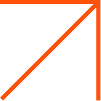

Строим свою
систему грейдов
Иван Поддубный
CTO Webpractik

Кто я
- 13+ лет в IT (web). Прошел путь fullstack, teamlead
- Пишу на PHP, Typescript, Nodejs (Nest) и React
- Влюблен в Linux, OpenSource.
- Работаю CTO в Вебпрактик (130+)
- Член программного комитета Podlodka PHP Crew
- Организатор Ростовского PHP сообщества (400+ человек)
В Вебпрактик мы пишем сервисы для корпораций

Обеспечение роста
- Мы заказная разработка
- Люди - самое важное
- Обеспечение роста на 30-50% в год
Middle vs Junior vs Senior
Проблемы роста
- Джунов нужно быстро растить
- Мидлов нужно адаптировать
- Конфликты уровня "почему он получает столько"
Нужна единая
система координат
в компании
Какие задачи решают грейды в компании:
- Скорость и качество роста сотрудников
- Прозрачность и отсутствие потолка
- Уменьшение предвзятости
- Уменьшение конфликта уровней ЗП
- Увеличение срока жизни сотрудника в компании
Из чего состоит грейдовая система
- Грейды (требования, скилы к каждому грейду)
- Процессы!
Должны ли софты быть привязаны к уровням?
- Софты очень размытое понятие
- Софты сложно прозрачно измерять
- На начальном этапе можно вынести за скобки уравнения
- Это не значит что мы
- Не донесли ценность софтов для сотрудников
- Мы не наставляем по ним если видим перекосы
- Мы просто отвязали их из грейдов ввиду сложности их измерять
Собрать требования к знаниям (хардам)
Кто такой для вас Middle?
- Выполняет средние задачи вашей компании
- "Рыночный middle"
Является middle разработчиком/специалистом пойдя в любую компанию
Как составляли грейды
- Источники
- Анализ рынка (вакансии)
- Cобственная экспертиза
- Публичные роадмепы (roadmap.sh)
- Делаем матрицу что должен знать каждый специалист на каждом грейде
- Добавляем свою специфику
- Можно сделать акцент на слабых местах
- Пишем задачи. Делали постепенно.
Как мы подходили к функционалу
- Начинали с таблички google docs
- (Некоторые коллеги делают на основе таск трекера!)
Как мы подходили к функционалу
- Начинали с таблички google docs
- (Некоторые коллеги делают на основе таск трекера!)
- Начали упираться по гибкости
- Запилили за 2 вечера первый прототип на jquery и ... bitrix
- Постепенно допиливали
Линейность
- Линейная система проще
- При наличии нескольких веток развития можно перейти к бальной системе
Домашки
- Нельзя стать крутым ИТ специалистом не занимаясь системным самообразованием
- Готовность к домашкам позволяет отсеять большую часть нерелевантных специалистов
- Домашки не должны быть слишком объемными, максимум несколько часов
- Автоматы
- Домашки - абстрактные задачи, чтобы не было мысли что мы эксплуатируем людей в личное время
Аттестация новоприбывших
- На собеседовании мы верхнеуровнево смотрим где пробелы
- Сможет ли достичь за 2-3 месяца запрошенного уровня денег в грейдах
- Выделяем системно время на атестацию специалиста
Менторы
- Человек должен этого хотеть, нельзя заставлять
- Должна быть денежная мотивация, хотя бы номинальная
- Выделение времени зависит от вашей модели учета времени специалистов
- Пирамида менторства
"Хакнуть систему"
- Реально сложно т.к. наличие знаний проверяет ментор.
- С ментора спросят если его падаван не знает базу, это его репутация
- Объем пересдач мы мониторим, и если человек плохо готовится к сдачам пытаясь сдавать наскоком - будет разговор
А если я сдам и забуду деталь через год?
Отслеживать узкие места в воронке
- Ментор может быть загружен, а у джуна скопилось 2-3+ домашки
- Если этих домашек не хватало до повышения - повышаем авансом. То что компания не может проверить знания - проблема компании.
- Перенаправить на другого ментора
- Проверить руководителю (заодно чек качества сдачи конкретного сотрудника)
Системное обновление
- Рынок развивается
- Компания и ее векторы меняются
- Можно закрывать какие то факапные места грейдом
- Нужно как минимум раз в год проводить рефакторить
Как рождается скил
- Идея поступает как сверху так и снизу
- Выделяется ответственный на скил (обычно кто-то старший)
- После ревью запускается в работу
Внешние курсы
- Хороших курсов мало
- У курса должны быть домашки, а не просто лекции
- Проверить качество этих домашек и матчинг с вашими
Внедрение
- Согласование модели с коллегами, получение обратной связи
- Модель развития - это контракт с сотрудником
- Пошаговая аттестация сотрудников
Инициатива не обязательно
должна идти сверху
Выводы:
- Наличие грейдов дает много плюшек компании и сотрудникам
- Скорость и качество роста сотрудников
- Прозрачность и отсутствие потолка
- Уменьшение предвзятости, конфликта уровней ЗП
- Увеличение срока жизни сотрудника в компании
- Создание стартовой модели стоить нескольких дней ментальных усилий
- Начинать можно без всякого функционала, просто на базе google docs или taskTracker
- Инициатива не обязательно должна идти сверху
Спасибо! 🙃
| Презентация: |
Голосование за доклад: |
|
|
|
Telegram: @northleshiy